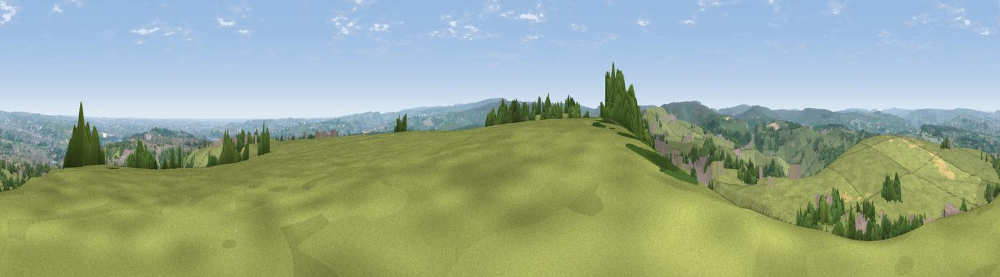

Wholestone Moor
#7850 in England · top 6% of its area beats it · near Scapegoat HillWhere it is
The exact computed spot (SE 07825 16775). Click the marker for map links.
The view, rendered

A 360° render of this exact spot computed from the terrain model, tree cover and land cover — summer colours, afternoon light, calibrated against photographs of famous viewpoints. Real trees, hedges and buildings will differ in detail.
The panorama
Grey silhouette: terrain skyline in each direction (720 bearings, Earth curvature and refraction included). Dashed green: skyline with trees (+15 m) and buildings (+8 m) as obstacles. Blue strip: how far the ground is visible on each bearing.
Where the view opens
Wedge length = distance to the farthest visible ground on that bearing (vegetation-aware). Rings at 10, 25 and 50 km.
What fills the view
63% grassland · 20% woodland · 16% built-up ·
Angular shares of the visible panorama (visual magnitude), not map area. Landscape diversity 0.41 (0–1 Shannon).
Key numbers
More beautiful places nearby
The staircase of upgrades: each row has a higher view potential than everything closer. Driving times are estimates from straight-line distance, calibrated against real road routing — check an actual route before setting out.
| Place | Direction | Drive | Score |
|---|---|---|---|
| Viewpoint near Marsden | S · 6 km | ~12 min | 71.0 |
| Viewpoint near Stump Cross | N · 11 km | ~21 min | 71.5 |
| Viewpoint near Jackson Bridge | SE · 14 km | ~25 min | 73.5 |
| Viewpoint near Greenfield | SSW · 16 km | ~28 min | 76.0 |
| Viewpoint near Carrbrook | SSW · 19 km | ~32 min | 77.1 |
| Viewpoint near Edenfield | W · 26 km | ~41 min | 77.5 |
| Darwen Hill | W · 40 km | ~59 min | 80.7 |
| White Brow | W · 42 km | ~62 min | 82.9 |
53.64742, -1.88310 · source: dobih hill · position refined by local search. Computed location — check access rights before visiting.